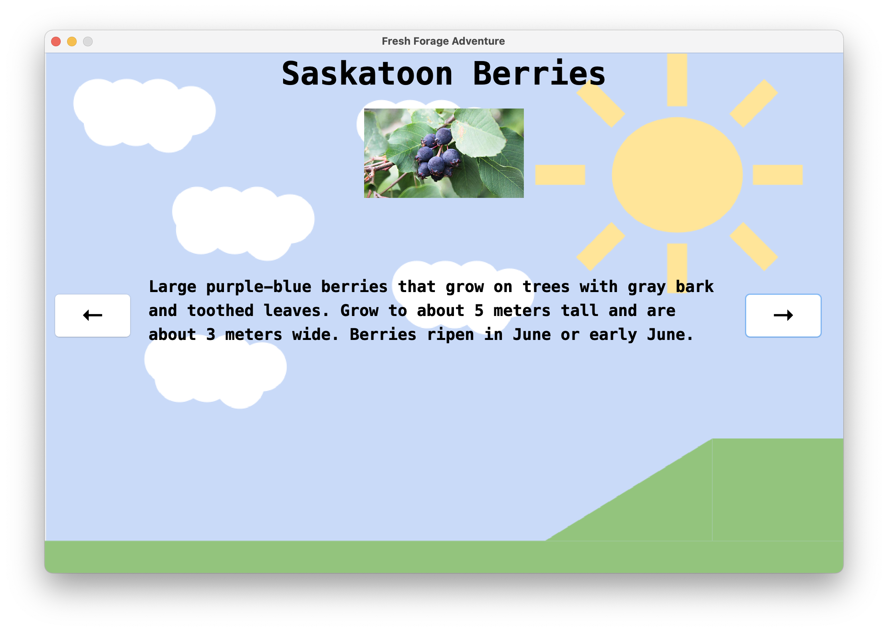
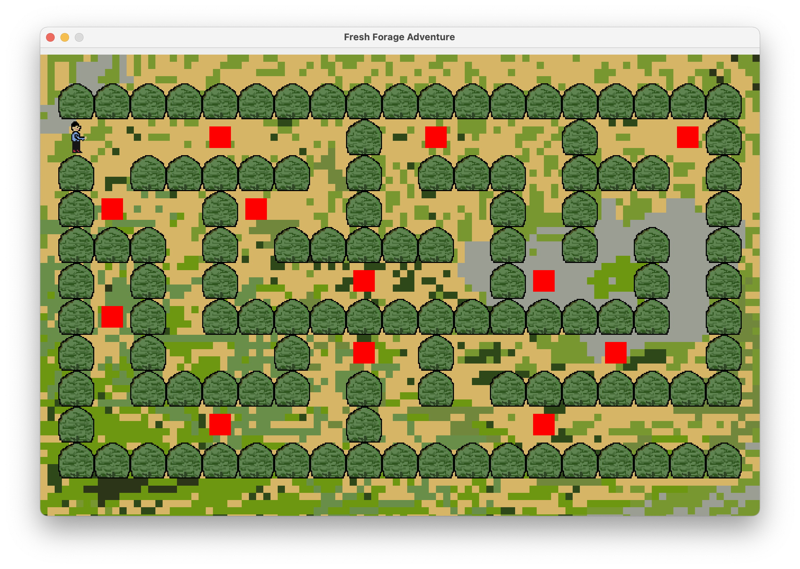
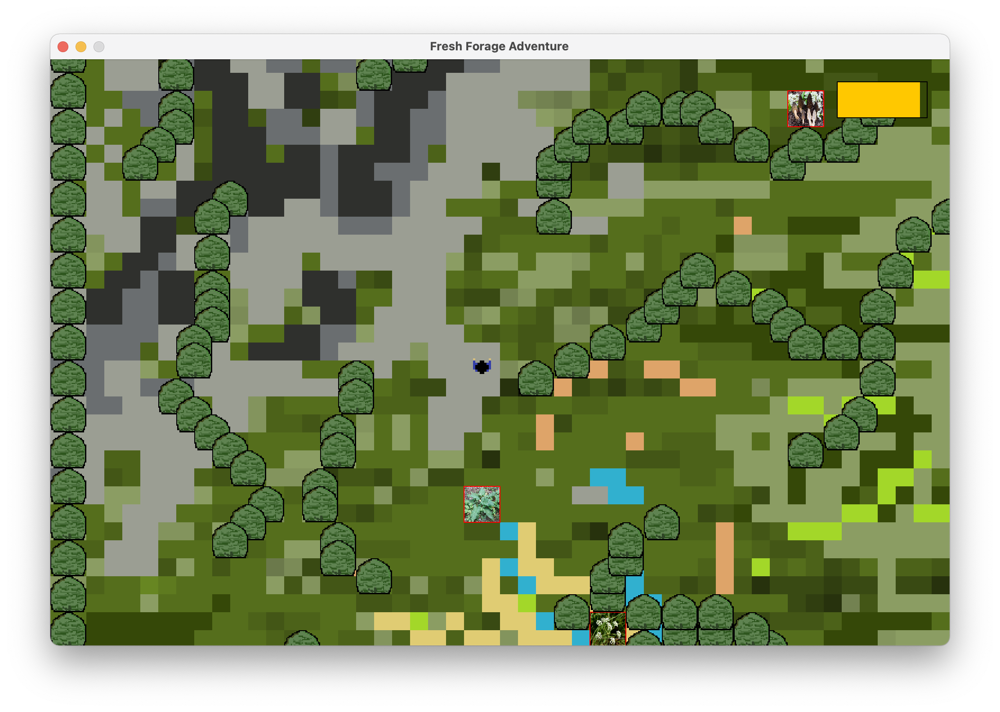

The general premise of the project was that, in a group, we were to create a game for a specific audience by age, which was to teach them about a "survival" skill. The topic was to be on any issue that is prominent in our society today. As such, my group chose to make a game teaching 5-10 year olds about safe foraging, an increasingly popular pasttime.
Our company name is BLD Studios, and the logo is displayed below. In our game, there are 3 levels: a learning level, a maze level, and an action level, shown below in order. In the first level, we educate the player on different types of plants. In level 2, we test the players on this knowledge, requiring them to move through a maze and answer questions on whether or not a plant was edible. Level 3 is a free-roam map, where the player has to decide if they want to forage a certain plant, and then play a minigame in order to forage it.



As this course is about Java programming, the game was to be built using Java GUI, and we used Swing. It took a while to get used to the new structures, but we made it work. Through this experience, we had to learn many new concepts by ourselves, such as using a class as a JPanel or implementing Runnable. Overall, it was a fun project as we got to use many of the OOP concepts we learned throughout the course, all of which ar presented here in this portfolio.
My individual contribution to this project involved the creation of a splash screen, the main menu, the instructions screen, and level 1 and 2, aside from the graphics, which was done by one of my partners.